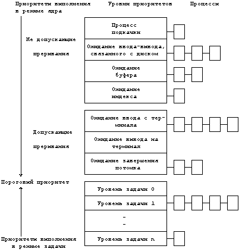
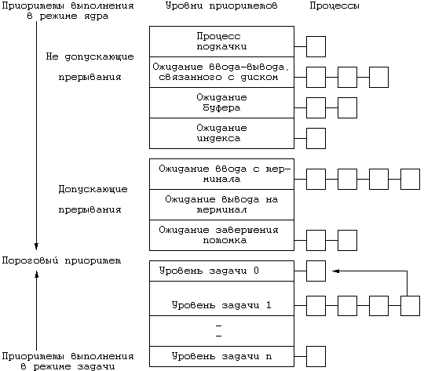
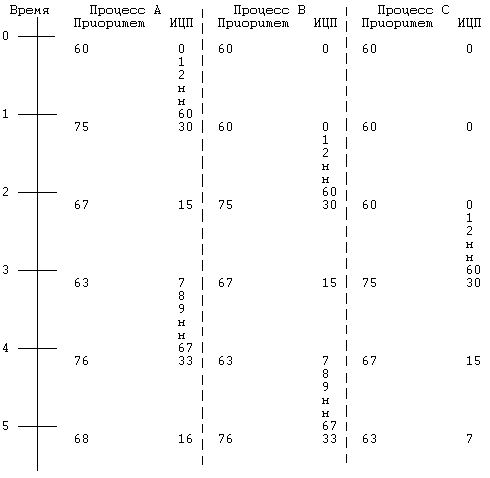
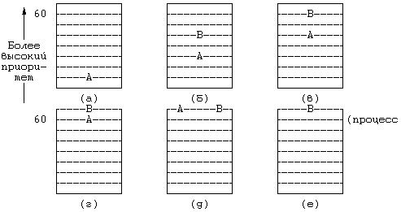
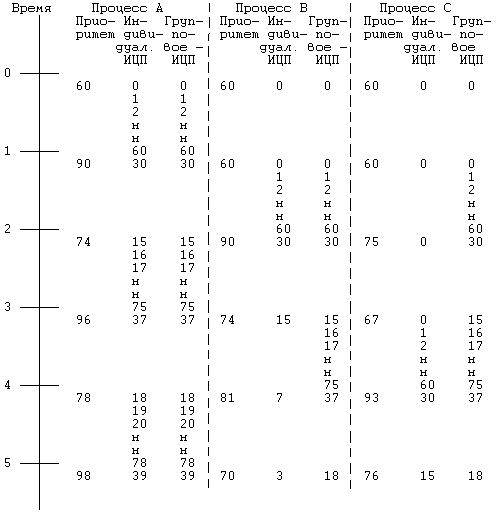

Планировщик процессов в системе UNIX принадлежит к общему классу планировщиков, работающих по принципу "карусели с многоуровневой обратной связью". В соответствии с этим принципом ядро предоставляет процессу ресурсы ЦП на квант времени, по истечении которого выгружает этот процесс и возвращает его в одну из нескольких очередей, регулируемых приоритетами. Прежде чем процесс завершится, ему может потребоваться множество раз пройти через цикл с обратной связью. Когда ядро выполняет переключение контекста и восстанавливает контекст процесса, процесс возобновляет выполнение с точки приостанова.
Сразу после переключения контекста ядро запускает алгоритм планирования выполнения процессов (Рисунок 8.1), выбирая на выполнение процесс с наивысшим приоритетом среди процессов, находящихся в состояниях "резервирования" и "готовности к выполнению, будучи загруженным в память". Рассматривать процессы, не загруженные в память, не имеет смысла, поскольку не будучи загружен, процесс не может выполняться. Если наивысший приоритет имеют сразу несколько процессов, ядро, используя принцип кольцевого списка (карусели), выбирает среди них тот процесс, который находится в состоянии "готовности к выполнению" дольше остальных. Если ни один из процессов не может быть выбран для выполнения, ЦП простаивает до момента получения следующего прерывания, которое произойдет не позже чем через один таймерный тик; после обработки этого прерывания ядро снова запустит алгоритм планирования.
алгоритм schedule_process
входная информация: отсутствует
выходная информация: отсутствует
{
выполнять пока (для запуска не будет выбран один из про-
цессов)
{
для (каждого процесса в очереди готовых к выполнению)
выбрать процесс с наивысшим приоритетом из загру-
женных в память;
если (ни один из процессов не может быть избран для
выполнения)
приостановить машину;
/* машина выходит из состояния простоя по преры-
/* ванию
*/
}
удалить выбранный процесс из очереди готовых к выполне-
нию;
переключиться на контекст выбранного процесса, возобно-
вить его выполнение;
}
|
Рисунок 8.1. Алгоритм планирования выполнения процессов
В каждой записи таблицы процессов есть поле приоритета, используемое планировщиком процессов. Приоритет процесса в режиме задачи зависит от того, как этот процесс перед этим использовал ресурсы ЦП. Можно выделить два класса приоритетов процесса (Рисунок 8.2): приоритеты выполнения в режиме ядра и приоритеты выполнения в режиме задачи. Каждый класс включает в себя ряд значений, с каждым значением логически ассоциирована некоторая очередь процессов. Приоритеты выполнения в режиме задачи оцениваются для процессов, выгруженных по возвращении из режима ядра в режим задачи, приоритеты выполнения в режиме ядра имеют смысл только в контексте алгоритма sleep. Приоритеты выполнения в режиме задачи имеют верхнее пороговое значение, приоритеты выполнения в режиме ядра имеют нижнее пороговое значение. Среди приоритетов выполнения в режиме ядра далее можно выделить высокие и низкие приоритеты: процессы с низким приоритетом возобновляются по получении сигнала, а процессы с высоким приоритетом продолжают оставаться в состоянии приостанова (см. раздел 7.2.1).
Пороговое значение между приоритетами выполнения в режимах ядра и задачи на Рисунке 8.2 отмечено двойной линией, проходящей между приоритетом ожидания завершения потомка (в режиме ядра) и нулевым приоритетом выполнения в режиме задачи. Приоритеты процесса подкачки, ожидания ввода-вывода, связанного с диском, ожидания буфера и индекса являются высокими, не допускающими прерывания системными приоритетами, с каждым из которых связана очередь из 1, 3, 2 и 1 процесса, соответственно, в то время как приоритеты ожидания ввода с терминала, вывода на терминал и завершения потомка являются низкими, допускающими прерывания системными приоритетами, с каждым из которых связана очередь из 4, 0 и 2 процессов, соответственно. На рисунке представлены также уровни приоритетов выполнения в режиме задачи (*).
Ядро вычисляет приоритет процесса в следующих случаях:
- Непосредственно перед переходом процесса в состояние приостанова ядро назначает ему приоритет исходя из причины приостанова. Приоритет не зависит от динамических характеристик процесса (продолжительности ввода-вывода или времени счета), напротив, это постоянная величина, жестко устанавливаемая в момент приостанова и зависящая только от причины перехода процесса в данное состояние. Процессы, приостановленные алгоритмами низкого уровня, имеют тенденцию порождать тем больше узких мест в системе, чем дольше они находятся в этом состоянии; поэтому им назначается более высокий приоритет по сравнению с остальными процессами. Например, процесс, приостановленный в ожидании завершения ввода-вывода, связанного с диском, имеет более высокий приоритет по сравнению с процессом, ожидающим освобождения буфера, по нескольким причинам. Прежде всего, у первого процесса уже есть буфер, поэтому не исключена возможность, что когда он возобновится, он успеет освободить и буфер, и другие ресурсы. Чем больше ресурсов свободно, тем меньше шансов для возникновения взаимной блокировки процессов. Системе не придется часто переключать контекст, благодаря чему сократится время реакции процесса и увеличится производительность системы. Во-вторых, буфер, освобождения которого ожидает процесс, может быть занят процессом, ожидающим в свою очередь завершения ввода-вывода. По завершении ввода-вывода будут возобновлены оба процесса, поскольку они были приостановлены по одному и тому же адресу. Если первым запустить на выполнение процесс, ожидающий освобождения буфера, он в любом случае снова приостановится до тех пор, пока буфер не будет освобожден; следовательно, его приоритет должен быть ниже.
- По возвращении процесса из режима ядра в режим задачи ядро вновь вычисляет приоритет процесса. Процесс мог до этого находиться в состоянии приостанова, изменив свой приоритет на приоритет выполнения в режиме ядра, поэтому при переходе процесса из режима ядра в режим задачи ему должен быть возвращен приоритет выполнения в режиме задачи. Кроме того, ядро "штрафует" выполняющийся процесс в пользу остальных процессов, отбирая используемые им ценные системные ресурсы.
- Приоритеты всех процессов в режиме задачи с интервалом в 1 секунду (в версии V) пересчитывает программа обработки прерываний по таймеру, побуждая тем самым ядро выполнять алгоритм планирования, чтобы не допустить монопольного использования ресурсов ЦП одним процессом.

Рисунок 8.2. Диапазон приоритетов процесса
В течение кванта времени таймер может послать процессу несколько прерываний; при каждом прерывании программа обработки прерываний по таймеру увеличивает значение, хранящееся в поле таблицы процессов, которое описывает продолжительность использования ресурсов центрального процессора (ИЦП). В версии V каждую секунду программа обработки прерываний переустанавливает значение этого поля, используя функцию полураспада (decay):
decay(ИЦП) = ИЦП/2;
После этого программа пересчитывает приоритет каждого процесса, находящегося в состоянии "зарезервирован, но готов к выполнению", по формуле
приоритет = (ИЦП/2) + (базовый уровень приоритета задачи)
где под "базовым уровнем приоритета задачи" понимается пороговое значение, расположенное между приоритетами выполнения в режимах ядра и задачи. Высокому приоритету планирования соответствует количественно низкое значение. Анализ функций пересчета продолжительности использования ресурсов ЦП и приоритета процесса показывает: чем ниже скорость полураспада значения ИЦП, тем медленнее приоритет процесса достигает значение базового уровня; поэтому процессы в состоянии "готовности к выполнению" имеют тенденцию занимать большое число уровней приоритетов.
Результатом ежесекундного пересчета приоритетов является перемещение процессов, находящихся в режиме задачи, от одной очереди к другой, как показано на Рисунке 8.3. По сравнению с Рисунком 8.2 один процесс перешел из очереди, соответствующей уровню 1, в очередь, соответствующую нулевому уровню. В реальной системе все процессы, имеющие приоритеты выполнения в режиме задачи, поменяли бы свое местоположение в очередях. При этом следует указать на невозможность изменения приоритета процесса в режиме ядра, а также на невозможность пересечения пороговой черты процессами, выполняющимися в режиме задачи, до тех пор, пока они не обратятся к операционной системе и не перейдут в состояние приостанова.
Ядро стремится производить пересчет приоритетов всех активных процессов ежесекундно, однако интервал между моментами пересчета может слегка варьироваться. Если прерывание по таймеру поступило тогда, когда ядро исполняло критический отрезок программы (другими словами, в то время, когда приоритет работы ЦП был повышен, но, очевидно, не настолько, чтобы воспрепятствовать прерыванию данного типа), ядро не пересчитывает приоритеты, иначе ему пришлось бы надолго задержаться на критическом отрезке. Вместо этого ядро запоминает то, что ему следует произвести пересчет приоритетов, и делает это при первом же прерывании по таймеру, поступающем после снижения приоритета работы ЦП. Периодический пересчет приоритета процессов гарантирует проведение стратегии планирования, основанной на использовании кольцевого списка процессов, выполняющихся в режиме задачи. При этом конечно же ядро откликается на интерактивные запросы таких программ, как текстовые редакторы или программы форматного ввода: процессы, их реализующие, имеют высокий коэффициент простоя (отношение времени простоя к продолжительности использования ЦП) и поэтому естественно было бы повышать их приоритет, когда они готовы для выполнения (см. [Thompson 78], стр.1937). В других механизмах планирования квант времени, выделяемый процессу на работу с ресурсами ЦП, динамически изменяется в интервале между 0 и 1 сек. в зависимости от степени загрузки системы. При этом время реакции на запросы процессов может сократиться за счет того, что на ожидание момента запуска процессам уже не нужно отводить по целой секунде; однако, с другой стороны, ядру приходится чаще прибегать к переключению контекстов.

Рисунок 8.3. Переход процесса из одной очереди в другую
На Рисунке 8.4 показана динамика изменений приоритетов процессов A, B и C в версии V при следующих допущениях: все эти процессы были созданы с первоначальным приоритетом 60, который является наивысшим приоритетом выполнения в режиме задачи, прерывания по таймеру поступают 60 раз в секунду, процессы не используют вызов системных функций, в системе нет других процессов, готовых к выполнению. Ядро вычисляет полураспад показателя ИЦП по формуле:
ИЦП = decay(ИЦП) = ИЦП/2;
а приоритет процесса по формуле:
приоритет = (ИЦП/2) + 60;
Если предположить, что первым запускается процесс A и ему выделяется квант времени, он выполняется в течение 1 секунды: за это время таймер посылает системе 60 прерываний и столько же раз программа обработки прерываний увеличивает для процесса A значение поля, содержащего показатель ИЦП (с 0 до 60). По прошествии секунды ядро переключает контекст и, произведя пересчет приоритетов для всех процессов, выбирает для выполнения процесс B. В течение следующей секунды программа обработки прерываний по таймеру 60 раз повышает значение поля ИЦП для процесса B, после чего ядро пересчитывает параметры диспетчеризации для всех процессов и вновь переключает контекст. Процедура повторяется многократно, сопровождаясь поочередным запуском процессов на выполнение.

Рисунок 8.4. Пример диспетчеризации процессов
Теперь рассмотрим процессы с приоритетами, приведенными на Рисунке 8.5, и предположим, что в системе имеются и другие процессы. Ядро может выгрузить процесс A, оставив его в состоянии "готовности к выполнению", после того, как он получит подряд несколько квантов времени для работы с ЦП и снизит таким образом свой приоритет выполнения в режиме задачи (Рисунок 8.5а). Через некоторое время после запуска процесса A в состояние "готовности к выполнению" может перейти процесс B, приоритет которого в тот момент окажется выше приоритета процесса A (Рисунок 8.5б). Если ядро за это время не запланировало к выполнению любой другой процесс (из тех, что не показаны на рисунке), оба процесса (A и B) при известных обстоятельствах могут на некоторое время оказаться на одном уровне приоритетности, хотя процесс B попадет на этот уровень первым из-за того, что его первоначальный приоритет был ближе (Рисунок 8.5в и 8.5г). Тем не менее, ядро запустит процесс A впереди процесса B, поскольку процесс A находился в состоянии "готовности к выполнению" более длительное время (Рисунок 8.5д) - это решающее условие, если выбор производится из процессов с одинаковыми приоритетами.
В разделе 6.4.3 уже говорилось о том, что ядро запускает процесс на выполнение после переключения контекста: прежде чем перейти в состояние приостанова или завершить свое выполнение процесс должен переключить контекст, кроме того он имеет возможность переключать контекст в момент перехода из режима ядра в режим задачи. Ядро выгружает процесс, который собирается перейти в режим задачи, если имеется готовый к выполнению процесс с более высоким приоритетом. Такая ситуация возникает, если ядро вывело из состояния приостанова процесс с приоритетом, превышающим приоритет текущего процесса, или если в результате обработки прерывания по таймеру изменились приоритеты всех готовых к выполнению процессов. В первом случае текущий процесс не может выполняться в режиме задачи, поскольку имеется процесс с более высоким приоритетом выполнения в режиме ядра. Во втором случае программа обработки прерываний по таймеру решает, что процесс использовал выделенный ему квант времени, и поскольку множество процессов при этом меняют свои приоритеты, ядро выполняет переключение контекста.
Процессы могут управлять своими приоритетами с помощью системной функции nice:
nice(value);
где value - значение, в процессе пересчета прибавляемое к приоритету процесса:
приоритет = (ИЦП/константа) + (базовый приоритет) + (значение nice)
Системная функция nice увеличивает или уменьшает значение поля nice в таблице процессов на величину параметра функции, при этом только суперпользователю дозволено указывать значения, увеличивающие приоритет процесса. Кроме того, только суперпользователь может указывать значения, лежащие ниже определенного порога. Пользователи, вызывающие системную функцию nice для того, чтобы понизить приоритет во время выполнения интенсивных вычислительных работ, "удобны, приятны" (nice) для остальных пользователей системы, отсюда название функции. Процессы наследуют значение nice у своего родителя при выполнении системной функции fork. Функция nice действует только для выполняющихся процессов; процесс не может сбросить значение nice у другого процесса. С практической точки зрения это означает, что если администратору системы понадобилось понизить приоритеты различных процессов, требующих для своего выполнения слишком много времени, у него не будет другого способа сделать это быстро, кроме как вызвать функцию удаления (kill) для всех них сразу.

Рисунок 8.5. Планирование на основе кольцевого списка и приоритеты процессов
Вышеописанный алгоритм планирования не видит никакой разницы между пользователями различных классов (категорий). Другими словами, невозможно выделить определенной совокупности процессов, например, половину сеанса работы с ЦП. Тем не менее, такая возможность имеет важное значение для организации работы в условиях вычислительного центра, где группа пользователей может пожелать купить только половину машинного времени на гарантированной основе и с гарантированным уровнем реакции. Здесь мы рассмотрим схему, именуемую "Планированием на основе справедливого раздела" (Fair Share Scheduler) и реализованную на вычислительном центре Indian Hill фирмы AT&T Bell Laboratories [Henry 84].
Принцип "планирования на основе справедливого раздела" состоит в делении совокупности пользователей на группы, являющиеся объектами ограничений, накладываемых обычным планировщиком на обработку процессов из каждой группы. При этом система выделяет время ЦП пропорционально числу групп, вне зависимости от того, сколько процессов выполняется в группе. Пусть, например, в системе имеются четыре планируемые группы, каждая из которых загружает ЦП на 25% и содержит, соответственно, 1, 2, 3 и 4 процесса, реализующих счетные задачи, которые никогда по своей воле не уступят ЦП. При условии, что в системе больше нет никаких других процессов, каждый процесс при использовании традиционного алгоритма планирования получил бы 10% времени ЦП (поскольку всего процессов 10 и между ними не делается никаких различий). При использовании алгоритма планирования на основе справедливого раздела процесс из первой группы получит в два раза больше времени ЦП по сравнению с каждым процессом из второй группы, в 3 раза больше по сравнению с каждым процессом из третьей группы и в 4 раза больше по сравнению с каждым процессом из четвертой. В этом примере всем процессам в группе выделяется равное время, поскольку продолжительность цикла, реализуемого каждым процессом, заранее не установлена.
Реализация этой схемы довольно проста, что и делает ее привлекательной. В формуле расчета приоритета процесса появляется еще один термин - "приоритет группы справедливого раздела". В пространстве процесса также появляется новое поле, описывающее продолжительность ИЦП на основе справедливого раздела, общую для всех процессов из группы. Программа обработки прерываний по таймеру увеличивает значение этого поля для текущего процесса и ежесекундно пересчитывает значения соответствующих полей для всех процессов в системе. Новая компонента формулы вычисления приоритета процесса представляет собой нормализованное значение ИЦП для каждой группы. Чем больше процессорного времени выделяется процессам группы, тем выше значение этого показателя и ниже приоритет.
В качестве примера рассмотрим две группы процессов (Рисунок 8.6), в одной из которых один процесс (A), в другой - два (B и C). Предположим, что ядро первым запустило на выполнение процесс A, в течение секунды увеличивая соответствующие этому процессу значения полей, описывающих индивидуальное и групповое ИЦП. В результате пересчета приоритетов по истечении секунды процессы B и C будут иметь наивысшие приоритеты. Допустим, что ядро выбирает на выполнение процесс B. В течение следующей секунды значение поля ИЦП для процесса B поднимается до 60, точно такое же значение принимает поле группового ИЦП для процессов B и C. Таким образом, по истечении второй секунды процесс C получит приоритет, равный 75 (сравните с Рисунком 8.4), и ядро запустит на выполнение процесс A с приоритетом 74. Дальнейшие действия можно проследить на рисунке: ядро по очереди запускает процессы A, B, A, C, A, B и т.д.
Режим реального времени подразумевает возможность обеспечения достаточной скорости реакции на внешние прерывания и выполнения отдельных процессов в темпе, соизмеримом с частотой возникновения вызывающих прерывания событий. Примером системы, работающей в режиме реального времени, может служить система управления жизнеобеспечением пациентов больниц, мгновенно реагирующая на изменение состояния пациента. Процессы, подобные текстовым редакторам, не считаются процессами реального времени: в них быстрая реакция на действия пользователя является желательной, но не необходимой (ничего страшного не произойдет, если пользователь, выполняющий редактирование текста, подождет ответа несколько лишних секунд, хотя у пользователя на этот счет могут быть и свои соображения). Вышеописанные алгоритмы планирования выполнения процессов предназначены специально для использования в системах разделения времени и не годятся для условий работы в режиме реального времени, поскольку не гарантируют запуск ядром каждого процесса в течение фиксированного интервала времени, позволяющего говорить о взаимодействии вычислительной системы с процессами в темпе, соизмеримом со скоростью протекания этих процессов. Другой помехой в поддержке работы в режиме реального времени является невыгружаемость ядра; ядро не может планировать выполнение процесса реального времени в режиме задачи, если оно уже исполняет другой процесс в режиме ядра, без внесения в работу существенных изменений. В настоящее время системным программистам приходится переводить процессы реального времени в режим ядра, чтобы обеспечить достаточную скорость реакции. Правильное решение этой проблемы - дать таким процессам возможность динамического протекания (другими словами, они не должны быть встроены в ядро) с предоставлением соответствующего механизма, с помощью которого они могли бы сообщать ядру о своих нуждах, вытекающих из особенностей работы в режиме реального времени. На сегодняшний день в стандартной системе UNIX такая возможность отсутствует.

Рисунок 8.6. Пример планирования на основе справедливого раздела, в котором используются две группы с тремя процессами
(*) Наивысшим значением приоритета в системе является нулевое значение. Таким образом, нулевой приоритет выполнения в режиме задачи выше приоритета, имеющего значение, равное 1, и т.д.
Предыдущая глава || Оглавление || Следующая глава